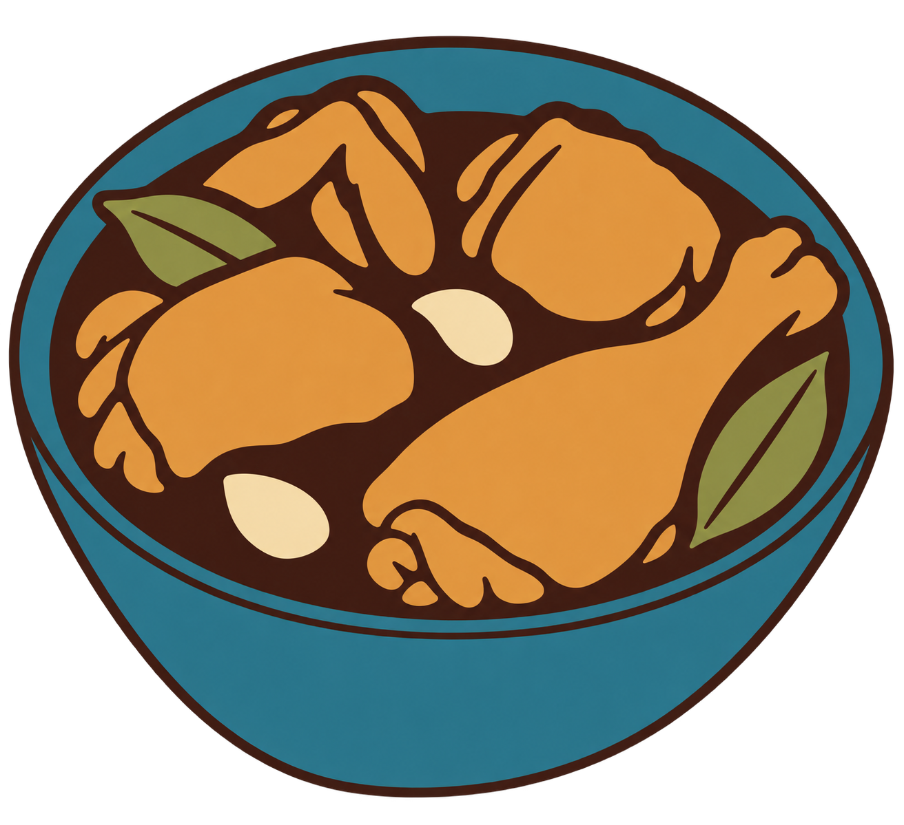

Produktionsansicht mit Motivspoiler. Technische Zertifizierung, Motivqualität und redaktionelle Freigabe sind getrennt. Motiv-/Spielabnahme: offen.
Quelle: chicken-adobo-m-r05 · Datei: motif-M-r05.png
Original SHA-256: 76b25cf3c41d8b5fb1dbac55e72c6ddac2bfac80d82bdd360432e3026c5d8449
Normalisiert SHA-256: ccd621429f19805b2bfa0934a0c73038a88ee46ca569c175658d6a5059f9e18c

{'alpha_below': 128, 'background': '#ffffff', 'briefing': 'Chicken Adobo. Hohe Dreiviertelperspektive und kompakte runde Schale mit ovalem Rand und gekrümmter Vorderwand. Große Keule vorn rechts, ihr dünneres Ende zeigt nach rechts oben. Hähnchenform links, Form hinten rechts und gefalteter Flügel hinten links bleiben an ihren Positionen. Zwei Lorbeerblätter links hinten und rechts vorn; zwei große Knoblauchformen im dunklen Saucenraum bleiben über eigene helle Cremefarbe und Silhouette vom Huhn unterscheidbar. Sauce, Fleisch und Knoblauch bleiben farblich getrennt. Fünf Farben erhalten zusätzlich Schale/Lorbeer getrennt; bei vier Farben teilen ausschließlich Schale und Lorbeer die Petrolgrünrolle. Keine Beilage, keine neue Perspektive, keine neue Dekoration; kein Abschneiden charakteristischer Formen. Erlaubte Detailreduktion: Haut-, Keramik- und Glasurtextur, Pfefferkörner und Glanzpunkte entfallen. Feine Blattadern, dünne Doppellinien und kleine Falten werden zusammengefasst. Knoblauch bleibt mit eigener Cremefarbe und umgebendem Saucenraum unterscheidbar. Bei vier Farben wird nur die Farbtrennung von Schale und Lorbeer aufgegeben.', 'crop': [12, 51, 1298, 1160], 'fit': 'contain', 'format': 'picross-image-design-v1', 'height': 25, 'mode': 'color', 'origin': 'Native KI-Abstraktion des freigegebenen B-r01, farblich korrigiert und als M-r05 ausdrücklich freigegeben; Originalpaket r04 am Quellcommit 295f9d0960b45cef0bd2191d2e027211b78c8d63.', 'palette': [{'id': 'bay', 'rgb': '#7a843c'}, {'id': 'bowl', 'rgb': '#28606b'}, {'id': 'chicken', 'rgb': '#d69140'}, {'id': 'garlic', 'rgb': '#f2dfb2'}, {'id': 'sauce', 'rgb': '#3b241d'}], 'rights': 'Eigene auf Nutzerauftrag erzeugte und freigegebene Motivvorlage für Picross, keine externen Bildreferenzen. Tatsächliche Bild- und Motivfreigaben im Paket.', 'source_id': 'chicken-adobo-m-r05', 'variants': [{'id': 'c29x25-5', 'method': 'area', 'threshold': 128}], 'width': 29, 'working_mode': 'faithful'}
{'format': 'PNG', 'source_size': [1312, 1199], 'source_mode': 'RGBA', 'orientation': 1, 'normalized_size': [1312, 1199], 'color_treatment': 'untagged/sRGB RGB or gray interpreted as sRGB', 'icc_sha256': None, 'alpha': 'preserved, composited against design background only during rasterization'}
{'tool': 'rp3-image-1', 'pillow': '12.3.0', 'jpeg': '8.0', 'jpeg_turbo': '3.1.4.1', 'littlecms': '2.19', 'zlib': '1.3.1.zlib-ng'}
{'status': 'solved', 'proof_verified': True, 'certified': True, 'logic_hash': 'a367272b8fa829a8ba5f77c8d4683f860d19c402112f645d033e7eafd339856e', 'profile': {'id': 'full-line-color', 'version': 1, 'start': 'unknown', 'deduction': 'all-line-supported-values', 'search': False}, 'profile_hash': 'f63ee6c88e6baa9f6a22f386ae532482d7ffb7b9a2237867f0d7cd9960ab608f', 'steps': 117, 'line_evaluations': 171, 'elapsed_seconds': 0.06475870000031136}
Kandidat: 8789d1b3a21c4a739ea125d4cb7b19fe79ffa2ef0054b76381b5bd1690f35b2a
{'id': 'c29x25-5', 'method': 'area', 'threshold': 128}
| Linie | Vollständige Hinweise (Länge:Farb-ID) |
|---|---|
| 1 | 1:bay 6:bowl 1:bay |
| 2 | 1:bay 12:bowl 1:bay |
| 3 | 1:bay 2:bowl 2:sauce 1:chicken 2:bay 4:bowl 1:sauce 4:bowl 1:bay |
| 4 | 3:bowl 1:sauce 5:chicken 2:sauce 2:bay 2:chicken 1:bay 4:bowl |
| 5 | 2:bowl 1:sauce 1:bay 3:chicken 1:sauce 1:chicken 1:bay 1:sauce 3:bay 4:chicken 1:sauce 3:bowl |
| 6 | 1:bowl 8:bay 2:chicken 2:sauce 1:bay 6:chicken 1:sauce 3:bowl |
| 7 | 2:bowl 1:sauce 4:bay 2:sauce 1:chicken 1:bay 1:chicken 3:bay 6:chicken 1:bay 1:sauce 1:bay 1:bowl 1:bay |
| 8 | 1:bowl 2:sauce 7:bay 1:sauce 1:chicken 2:sauce 1:bay 5:chicken 2:bay 1:chicken 2:bay 1:bowl |
| 9 | 1:bay 1:bowl 1:sauce 3:bay 5:chicken 2:sauce 2:chicken 1:sauce 1:bay 3:chicken 1:bay 1:sauce 1:bay 3:chicken 1:bowl 1:bay |
| 10 | 2:bowl 1:bay 1:chicken 1:bay 7:chicken 1:sauce 1:chicken 2:garlic 2:sauce 1:bay 1:sauce 2:bay 2:chicken 2:bay 2:bowl |
| 11 | 1:bowl 1:sauce 2:bay 9:chicken 1:sauce 2:chicken 1:sauce 1:bay 5:chicken 1:bay 2:sauce 2:bowl |
| 12 | 1:bowl 1:sauce 2:bay 9:chicken 2:sauce 1:bay 6:chicken 1:bay 1:sauce 2:bay 2:bowl |
| 13 | 1:bay 1:bowl 1:sauce 1:bay 7:chicken 1:bay 2:sauce 8:chicken 1:sauce 3:bay 1:bowl 1:bay |
| 14 | 1:bay 1:bowl 1:sauce 1:chicken 1:bay 2:chicken 2:bay 3:sauce 1:bay 8:chicken 5:bay 1:bowl 1:bay |
| 15 | 2:bowl 1:sauce 1:chicken 1:bay 1:sauce 1:chicken 1:bay 3:sauce 9:chicken 4:bay 2:bowl |
| 16 | 1:bay 1:bowl 4:sauce 3:garlic 1:sauce 2:chicken 1:bay 7:chicken 1:sauce 2:bay 1:sauce 1:bowl 1:bay |
| 17 | 3:bowl 2:sauce 1:bay 2:garlic 2:sauce 1:bay 1:chicken 1:bay 5:chicken 1:bay 2:sauce 3:bowl |
| 18 | 1:bay 3:bowl 5:sauce 2:bay 3:chicken 1:bay 2:chicken 3:sauce 3:bowl 1:bay |
| 19 | 6:bowl 3:sauce 5:bay 2:sauce 6:bowl |
| 20 | 20:bowl |
| 21 | 1:bay 18:bowl |
| 22 | 17:bowl |
| 23 | 1:bay 14:bowl |
| 24 | 1:bay 11:bowl |
| 25 | 1:bay 5:bowl 1:bay |
| Linie | Vollständige Hinweise (Länge:Farb-ID) |
|---|---|
| 1 | 1:bay 3:bowl 2:bay |
| 2 | 4:bowl 2:sauce 3:bowl 1:bay |
| 3 | 2:bowl 2:sauce 3:bay 2:sauce 3:bowl 1:bay |
| 4 | 1:bowl 1:bay 2:sauce 1:bay 1:chicken 3:bay 1:chicken 2:sauce 3:bowl |
| 5 | 2:bowl 5:bay 3:chicken 1:bay 1:chicken 1:sauce 4:bowl 1:bay |
| 6 | 1:bay 1:bowl 1:sauce 4:bay 5:chicken 1:bay 2:sauce 5:bowl |
| 7 | 2:bowl 4:bay 6:chicken 4:sauce 4:bowl 1:bay |
| 8 | 1:bay 1:bowl 1:sauce 1:chicken 3:bay 5:chicken 1:bay 1:chicken 1:garlic 1:bay 1:sauce 5:bowl 1:bay |
| 9 | 1:bowl 1:sauce 2:chicken 1:bay 1:sauce 1:bay 5:chicken 2:bay 2:garlic 1:sauce 6:bowl |
| 10 | 1:bowl 1:sauce 2:chicken 1:bay 1:sauce 1:bay 5:chicken 2:sauce 2:garlic 2:sauce 5:bowl |
| 11 | 1:bay 1:bowl 2:chicken 1:sauce 1:bay 1:chicken 1:bay 5:chicken 6:sauce 5:bowl 1:bay |
| 12 | 2:bowl 1:bay 3:chicken 1:bay 2:sauce 3:chicken 1:bay 2:sauce 1:chicken 1:sauce 1:bay 1:sauce 6:bowl |
| 13 | 2:bowl 1:bay 1:chicken 1:bay 3:chicken 2:sauce 2:chicken 1:sauce 1:bay 2:chicken 3:bay 6:bowl |
| 14 | 3:bowl 3:sauce 1:bay 1:sauce 2:chicken 3:sauce 2:chicken 1:bay 2:chicken 1:bay 6:bowl |
| 15 | 3:bowl 1:sauce 1:bay 1:sauce 1:bay 1:sauce 1:chicken 1:garlic 1:chicken 1:sauce 4:chicken 1:bay 1:chicken 1:bay 6:bowl |
| 16 | 3:bowl 5:bay 1:sauce 1:garlic 1:chicken 1:bay 6:chicken 1:bay 6:bowl |
| 17 | 3:bowl 2:bay 3:chicken 1:bay 2:sauce 6:chicken 2:bay 5:bowl 1:bay |
| 18 | 1:bay 1:bowl 1:sauce 6:chicken 1:sauce 1:bay 7:chicken 1:sauce 5:bowl |
| 19 | 2:bowl 6:chicken 1:bay 8:chicken 1:sauce 5:bowl |
| 20 | 2:bowl 1:bay 5:chicken 1:sauce 7:chicken 1:sauce 5:bowl |
| 21 | 1:bay 2:bowl 4:chicken 2:bay 6:chicken 1:bay 1:sauce 5:bowl |
| 22 | 2:bowl 1:sauce 2:chicken 1:bay 1:sauce 1:bay 3:chicken 2:bay 3:sauce 4:bowl |
| 23 | 1:bay 2:bowl 1:sauce 3:bay 2:chicken 1:bay 1:sauce 3:bay 1:sauce 4:bowl |
| 24 | 3:bowl 1:sauce 3:chicken 1:bay 1:sauce 4:bay 4:bowl |
| 25 | 2:bowl 2:bay 1:chicken 1:bay 1:sauce 4:bay 1:sauce 3:bowl |
| 26 | 2:bowl 1:bay 1:chicken 1:bay 1:sauce 3:bay 3:bowl 1:bay |
| 27 | 1:bay 8:bowl 1:bay |
| 28 | 1:bay 3:bowl 2:bay |
| 29 | – |